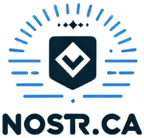

Free NIP-05 verified @nostr.ca identifiers for all
Want a free @nostr.ca identifier to use with Nostr? Simply send an email to nostr@nostr.ca to request your identifier. Identifiers are available on a first come, first served basis, so get your identifier before someone beats you to it!
FAQ
Is it free?
Yes!
Why?
Why not?
Is a free service sustainable?
Everything is hosted on GitHub Pages and no costs are incurred.
Does that mean the service could get shut down at some point?
If GitHub Pages doesn't work out I'll try this from a VPS, but if the costs get out of hand, yes, it's possible that the service could shut down. This is another reason it's completely free
How can we help keep the service sustainable?
Although there's no cost, we wouldn't be sad if people wanted to zap a few sats to nostr@nostr.ca.
Are you affiliated with the Nostr protocol or nostr.com?
Absolutely not, just a Nostr fan that's trying to help expand the ecosystem.